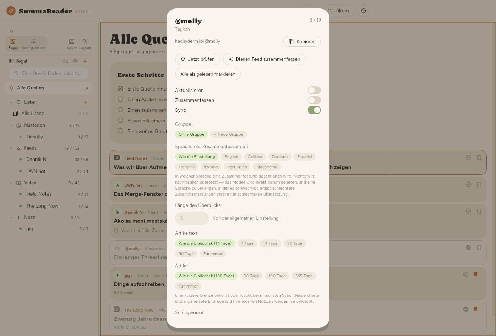
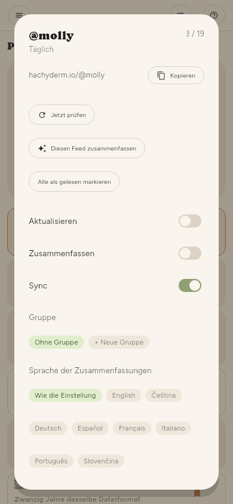

← Dinge aufbewahren · Inhalt · Sync →
Quellen verwalten
Ein Feed
Das Zahnrad an einer Zeile im Regal (sichtbar durch Mehrere auswählen oder langes Drücken) oder das Zahnrad neben dem Namen der Quelle in einem geöffneten Artikel öffnet diesen Feed:


| Jetzt prüfen | Diesen Feed abrufen |
| Diesen Feed zusammenfassen | Alles von ihm, was auf eine wartet |
| Alle als gelesen markieren | Alles von ihm |
| Aktualisieren | Ob Prüfungen ihn einschließen |
| Zusammenfassen | Ob Prüfungen ihn zusammenfassen |
| Sync | Ob seine Artikel zu Ihren anderen Geräten reisen |
| Gruppe, Sprache der Zusammenfassungen | Wo er im Regal steht, und seine eigene Sprache für Zusammenfassungen |
| Artikel erneut laden | Gescheiterten Text neu abrufen |
| Erneut zusammenfassen | Seine Zusammenfassungen verwerfen und neu schreiben |
| Entfernen | Fragt zuerst und sagt, was es kostet |
Erneut zusammenfassen ist das Mittel nach einem Wechsel der Zusammenfassungssprache oder des Modells — ein Artikel, der schon eine Zusammenfassung hat, wird sonst nie neu bearbeitet.
Verlauf, eingeklappt unten im Panel, zeigt jede Änderung am Feed, die neueste zuerst: seine Schlagwörter, seine Gruppe und seine Einstellungen, und wann er hinzugefügt oder entfernt wurde. Jede Zeile nennt Datum und Uhrzeit, was sich geändert hat und woher die Änderung kam — von diesem Gerät, vom MCP-Server mit dem Namen des Tokens, aus der Synchronisierung, aus dem Umbenennen eines Schlagworts oder aus einer Aktion auf mehrere Quellen auf einmal. Der Verlauf bleibt auf diesem Gerät und wird nicht synchronisiert.
Viele Feeds
Konfiguration › Grundlegend › Quellen › Quellen bietet dieselben Elemente für die ganze Liste, mit einem Filter und einem Ankreuzfeld. So ist „jeder YouTube-Kanal, den ich letzte Woche importiert habe“ ein einziger Schritt statt dreihundert.